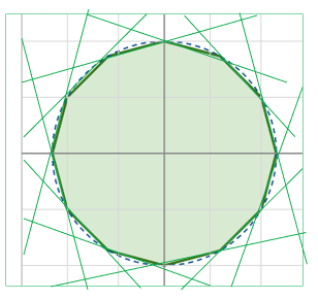
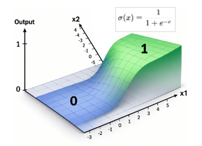
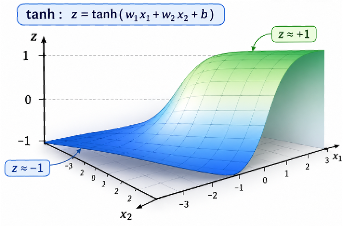
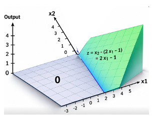
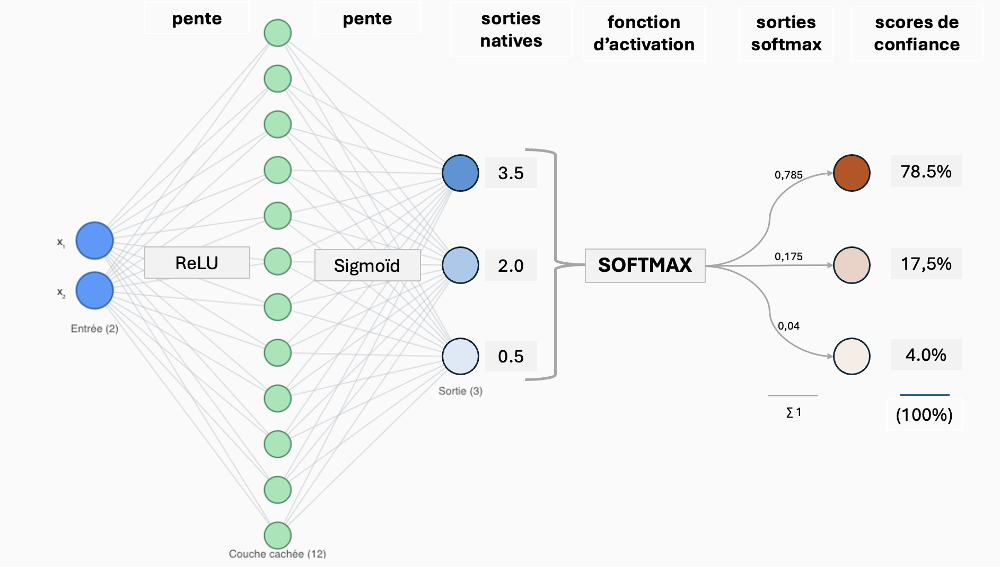

Composer des transformations
Combiner des neurones en réseau
Le perceptron est un classifieur binaire
Tout neurone coupe l'espace en deux parties avec une
frontière linéaire qui sépare sa zone d'activation de sa
zone d'inhibition.
En deux dimensions, c'est une droite qui sépare l'espace en un côté vrai (1) et un côté faux (0).
Détecter une figure convexe dans l'espace
|
 Approximation d'un disque avec 12 droites |
On peut cibler toute figure convexe par de multiples droites
issues de multiples perceptrons. Une entrée sera classifiée "dans le disque" si son point est du côté positif de toutes les droites. |
Couche cachée
Il faut deux niveaux : un découpage avec 12 neurones et la consolidation avec un neurone final.
Le découpage se fait par une couche cachée qui porte les neurones nécessaires.
La consolidation se fait à la couche de sortie par une combinaison
des sorties précédentes.
Elle répondra au final dans le disque (1) ou en dehors du disque (0).

Un réseau de neurones perceptron
Ce réseau de perceptron peut se construire en fixant les poids à la main mais il n'est pas possible de les lui faire apprendre car la fonction d'activation du perceptron est très limitée.
Apprentissage des couches cachées: une limite bloquante du perceptron
Si, après son calcul, la prédiction du perceptron n'est pas sur le bon plateau, celui de la cible,
l'erreur à rattraper sera de 1 ou -1.
La correction ne sait faire que des sauts brutaux : +1 (trop haut : descendre) ou −1 (trop bas : remonter).

Il est impossible de répartir l'erreur binaire (+1 ou -1) en demandant des fractions de correction aux neurones cachés qui fonctionnent uniquement en 1 ou 0.
Cette limitation a bloqué l'entraînement des réseaux multicouches et provoqué le premier hiver de l'IA .
Ce qu'il reste du perceptron d'origine
Le mécanisme : Tout neurone fonctionne sur le même principe de calcul d'un score brut qui sépare l'espace en deux parties.
Ce sont les fonctions d'activation qui transforment le score en prédiction qui ont évolué.
Le nom : On continue d'utiliser abusivement le terme, comme dans MLP -
Multi Layer Perceptron, alors que les neurones ne fonctionnent plus par dépassement de seuil.
L'idée qui a tout changé: remplacer le mur par une pente
Une fonction d'activation en pente douce (continue et dérivable, bornée entre 0 et 1) permet de mesurer l'erreur.
une pente donne la direction et la distance à franchir pour réduire l'écart à la cible.
Fonctions d'activation des réseaux de neurones
|
 sigmoid |
 tanh |
 ReLU |
| Sigmoïde (logistic, 1970s) : une courbe en S douce qui écrase toute valeur entre 0 et 1. | Tanh : courbe en S, entre -1 et +1. Centrée sur zéro, elle converge souvent plus vite. | ReLU (Rectified Linear Unit, popularisée en 2010) : Ultra simple à calculer, elle a permis d'entraîner des réseaux très profonds et a déclenché la révolution du deep learning. |
SOFTMAX : Une fonction de groupe pour les classifications multi-classes
Les multiples sorties produisent des résultats numériques indépendants peu faciles à comparer quand il faut choisir parmi n classes.
La fonction Softmax reprend les scores de toutes les sorties
et produit une distribution de probabilité.
(Les valeurs sont ramenées entre 0 et 1 et leur somme fait toujours 1.)
Cette distribution accentue les différences : plus un score dépasse les autres, plus sa probabilité devient disproportionnellement grande.

Formule : pour un vecteur z = [z₁, z₂, ..., zₙ], softmax(z)i = ezᵢ / Σ(ezⱼ)
C'est ainsi que sont présentés les scores de confiance
dans les classifieurs multi-classes.
Température : contrôle de la concentration (formule étendue: softmax(z/T)i = ezᵢ/T / Σ(ezⱼ/T)>
La Softmax peut être paramétrée avec une température T :
plus T est élevée, plus la distribution est uniforme ;
plus T est basse, plus une classe domine.
En pratique : une température basse produit des réponses fiables et répétables
(une classe clairement dominante), tandis qu'une température haute favorise la
diversité et l'exploration de classes moins probables.